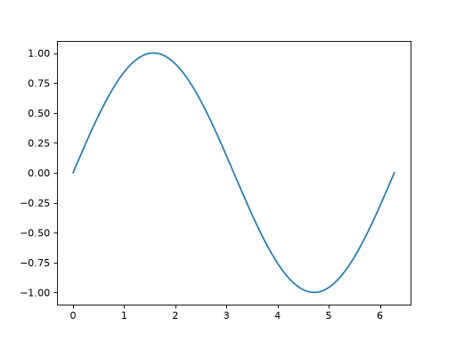

An interesting example¶
This is an interesting example.
>>> import numpy as np
>>> x = np.linspace(0, 2 * np.pi, 1000)
>>> x[:10]
array([ 0. , 0.00628947, 0.01257895, 0.01886842, 0.0251579 ,
0.03144737, 0.03773685, 0.04402632, 0.0503158 , 0.05660527])
Even more interesting than that:
Hint
If running in the IPython console, consider running %matplotlib to enable
interactive plots. If running in the Jupyter Notebook, use %matplotlib
inline.
>>> import matplotlib.pyplot as plt
>>>
>>> plt.plot(x, np.sin(x))
[...]


